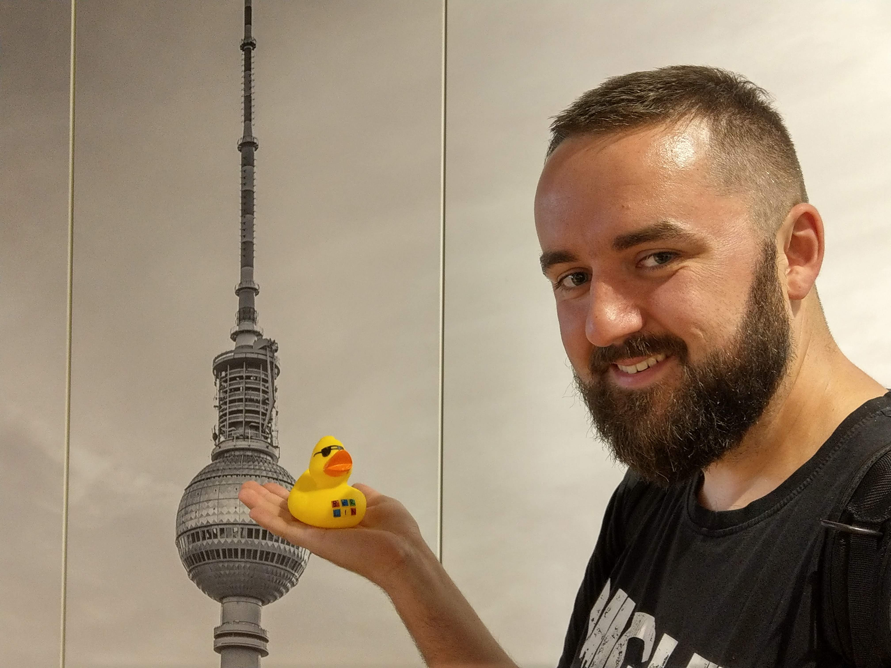

Jędrzej Paulus - strona domowa
Kim jestem? Jestem Developer-Wannabe.
Pamiętniczek człowieczka z frontendu.
Moje hobby
- Kodowanie
- Podcastowanie
- Bieganie
Jak się uczę
- Przychodzę do pracy godzinę wcześniej
- Wyłączam powiadomienia w komórce
- Robię pomodoro
Po co mi to IT?
Przez długi czas pracowałem w firmie, która mnie fascynowała.
Potem w wyniku niefrasobliwości managementu pieniądze zostały wydane
i trzeba było zwalniać. Strasznie mnie to rozczarowało, bo budowałem tę
firmę od początku. W którymś momencie w firmie pojawiło się kodowanie, programowanie.
Zaczęło mnie to interesować, po zwolnieniu znalazłem drugą pracę, już tylko dzięki temu,
że chciałem wejść do IT oraz dlatego, że zacząłem kurs frontendu na studiach podyplomowych.
Jak się uczę?
Nie mam bardzo dużo czasu. Trenuję bieganie trzy razy w tygodniu, nagrywam podcasty. Nie chcę tego zarzucać, bo oba hobby powodują odprężenie i czyszczenie głowy Dlatego staram się przyjść godzinę wcześniej do pracy i wtedy się uczę. Od stycznia 2019 złamałem tę zasadę tylko 2 razy.
Nowy tydzień 3 czerwca 2019
Dzisiaj nowy tydzień nauki. Maciej rozwiązuje zadania z poprzedniego tygodnia i poprawia błędy, które wkradły się w w poprzednim tygodniu. W obecnym tygodniu będę się uczyć nieco projektowania.
Uczymy się GITa. To jest świetne narzędzie. Korsan, Ty mi tak tłumaczysz, że ja wreszcie rozumem. Mamy commitować tak często jak to możliwe. Co najmniej gdy wykonujesz istotne zmiany. GIT jest git. Tak twierdzi Aniserowicz, a Korsan to podkreśla. Dobra robota GIT!
- CSS
- Style, czyli CSS to sposób stylowania tego, co widzisz.
- HTML
- Szkielet strony, który trzyma ją w kupie.
- ES6
- Język, który rusza wszystko na
- JavaScript